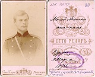
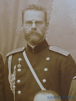
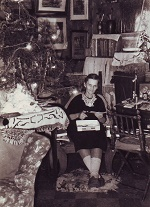
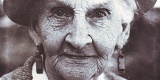
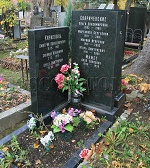

Страницы авторов "Тёмного леса"
Литературный Кисловодск и окрестности
Пишите нам! temnyjles@narod.ru
Нижеследующий текст составлен из относящихся прямо или косвенно к Ольге Владимировне фрагментов воспоминаний моей мамы Надежды Ефимовны Миклашевской (1925-2019). Воспоминания писались в основном в 2000-х годах на основе записей, сделанных по свежим следам.
О.В. Егорьева-Сваричовская (27.03.1892, Курск - 20.06.1986, Москва) - театральный художник, москвовед, коллекционер, дочь генерала В.Н. Егорьева {1}.
Училась в Смольном институте благородных девиц и женской гимназии им. святой Евфросинии Суздальской, на Высших женских естественно-научных курсах Лохвицкой-Скалон, в Петербургском художественном училище. Была сестрой милосердия на Балканской и I Мировой войне. Во время Гражданской войны работала машинисткой в штабе Южного фронта (на стороне красных). С 1925г. участвовала в работе Ученой Комиссии при Отделении Государственного Исторического Музея "Старая Москва", занималась обследованием некрополей, в частности, учетом могил декабристов. Работала бутафором в Театре им. Вахтангова, в Театре киноактера, в киностудии "Мосфильм". Дважды была замужем, первый муж - Дмитрий Федорович Сваричовский, второй - Яков Павлович Мамет; имела троих сыновей, средний в 17 лет погиб на II Мировой войне.
Часть коллекций (фотографии памятников Москвы и Подмосковья, открытки, конверты, этикетки, вырезки из московских газет, документы, письма, воспоминания) в 1979 была передана на хранение в объединение "Мосгорархив" (ф. 105 в Центр. Моск. архиве-музее личн. собраний Главархива), а также в НИОР РГБ, ИМЛИ, Музей Революции СССР.
В течение тридцати лет ежемесячно дома у Ольги Владимировны проходили собрания (участвовало до двадцати человек), на которых пили чай с пирогами, а главное, слушали и обсуждали доклад, делавшийся кем-то из постоянных участников или чаще специально приглашенным докладчиком. Н.Е. Миклашевская была постоянной участницей этих собраний в последние три года жизни Ольги Владимировны.
В.А.Руфова{7} познакомилась с Ольгой Владимировной в бассейне "Чайка", где обе регулярно плавали. Ольга Владимировна особенно ценила бассейн, потому что ходить ей было тяжело из-за артроза, а в воде он не ощущался. В.А.Руфова стала посещать 17-е числа, а с ней и Н.Е.Миклашевская.
Об упоминаемых людях см. примечания в конце страницы.
|  | В.Н.Егорьев (фотография 1894г.) |
|  | В.Н.Егорьев |
|  | О.В.Егорьева-Сваричовская (фотография 1956г.) |
|  | О.В.Егорьева-Сваричовская (фотография 1980г.) |
| О.В.Егорьева-Сваричовская (фотография 1983г.) | |
|  | Могила Сваричовских на Донском кладбище |
1983. В это время началось мое знакомство с Ольгой Владимировной Сваричовской, к которой меня привела Вера Руфова. По 17-м числам каждого месяца у О.В. в Трубниковском переулке происходили "журфиксы", на которых кто-то из присутствующих (часто специально приглашенных) делал доклад, а потом подавался чай и шел обмен мнениями по докладу или совсем на другие темы.
При первом моем посещении (17 августа) Маргарита Дмитриевна Савелова {8} читала отпечатанную лекцию Спиркина об экстрасенсах. Я сразу же обратила особое внимание на Зинаиду Александровну Милютину{15} и на Суровежина{14}, в прошлом комиссара МХАТа, была и такая должность. Он рассказал, что в 9-летнем возрасте начал коллекционировать книги, и начал с различных изданий "Конька-Горбунка". Двоюродные сестры О.В.: Мария Леонидовна и Вера Леонидовна, живущие в том же доме, несколькими этажами выше, бывали регулярно.
Очень интересен был для меня рассказ самой О.В. об аудиенции, которую дал ее отцу Николай II: отец был назначен начальником кадетского корпуса в Черногории, это было в 1910 году. О.В. подчеркивала недалекость царя, задававшего пустяковые, даже ничтожные вопросы. А вопрос отца, каковы будут инструкции, вообще поставил государя в тупик. При том значении, которое Черногория имела в то время для России.
Позже до самой смерти Ольги Владимировны я помогала ей в приведении ее дневников в порядок: О.В. очень ценила их. Откопали мы среди бумаг повесть "Живучая Ольга", написанную Ольгой Владимировной в 30-е годы. Но потом эта тетрадка куда-то исчезла. Я жалею до сих пор: повесть была автобиографическая. Правда, ее конца мы не нашли и тогда.
Бывала я у О.В. практически каждое 17-е число, часто и Илья{17} со мной.
17 сентября - у Ольги Владимировны. Всего 10 человек, некоторые для меня новые.
17 октября - у О.В. "Сережа", неприятный молодой человек, говорил о могилах германских солдат. Потом о Загорске. Вера Руфова прочитала статью из "Известий", потом письма В.Л.Пушкина к Вяземскому.
17 ноября. У Ольги Владимировны делал доклад о лечении магнитной водой некий Лев Николаевич. Только позже я сообразила, что это Ёлкин{12}, с которым мой папа познакомился в Калужской тюрьме и с которым по просьбе папы я встретилась в 1952 году в Маклакове, поселке на Енисее. Уже после возвращения в Москву папа как-то получил от него открытку, но встретиться они не успели (Елкин жил тогда в Калуге). Конечно, с 1952 года он изменился неузнаваемо. Доклад Елкина показался мне совсем неинтересным, т.к. не хватает ему компетентности (например, спутал Дж.Бернала с южноафриканским Барнардом). Жена Елкина - содокладчица, а он с ней непозволительно груб. Да и с самой О.В. обращается пренебрежительно: отмахивался от ее просьбы. После его ухода я рассказала о съезде уфологов (вычитала в "Kobiecie i Zyciu").
Разбирали с Ольгой Владимировной ее дневники. К сожалению, не нашли конца ее повести (фантастической, но основанной на реальных фактах) "Живучая Ольга". Конечно, поскольку повесть автобиографическая, то особенно обидная потеря.
17 января 1984 на вечере у Ольги Владимировны был поэт Валентин Берестов. Тот, кто привел его, не счел нужным представить. Берестов был шокирован тем, что присутствующие его не узнали. Сказал: "Граф путешествовал инкогнито". Он читал сказку своей жены, умершей меньше месяца назад. Жена (Александрова) была художницей, а героем сказки был домовенок Кузька. Когда Берестов представился, Вера Руфова тут же стала читать наизусть его стихи. Это пришлось очень кстати. Потом они дружно стали вспоминать преподавательницу Санину, читавшую у обоих (кстати, также и у нас) основы марксизма-ленинизма. Народу было человек 20, в том числе приведенная Верой ее однокурсница Ира Вогау, двоюродная сестра (не племянница!) писателя Бориса Пильняка.
Несколько слов о Пильняке, для сведения будущих моих читателей, в наличие которых я продолжаю верить, - ведь у меня уже две правнучки, и Катя читает по-русски - спасибо за это ее маме Тане. Настоящая фамилия Пильняка - именно Вогау. Погиб он в 1938, так же, как в те годы погибали многие, т.е. "необоснованно репрессирован", как говорится в моем "Большом энциклопедическом словаре", - двухтомнике 1991 года издания. Я читала "Повесть непогашенной луны" и знаю, что в ней довольно прозрачно говорится: Сталин в порядке партийной дисциплины принудил Фрунзе согласиться на хирургическую операцию, против которой возражал консилиум. М.В.Фрунзе скончался на операционном столе.
Была у Ольги Владимировны, она рассказывала о письмах брата{2} (из лагеря); об эвакуации в Фергану и о лучшей подруге, которую неустроенная жизнь неузнаваемо изменила: в частности, она подозревала, что О.В. ворует у нее лук, и систематически проверяла, четное или нечетное число луковиц у нее осталось - чтобы не пересчитывать весь запас.
17 февраля я не пошла к О.В. Вера Руфова рассказала мне: отмечали день рождения Маргариты Дмитриевны. Позже О.В. дала мне для прочтения свои воспоминания о Корине. Еще статью своей "тети Дины" о Шаляпине, - спрашивала меня, стоит ли перепечатывать.
В конце февраля мы были с Верой Руфовой в Доме ученых: там некий Ознобишин делал доклад об истории своей семьи, показывал слайды. Попали мы туда скорее по недоразумению: среди предков Ознобишина был брат декабриста Лихарева, и на этом основании он называл себя потомком декабриста.
Говорил много глупостей: 1) Уверял, что слово "пращур" по Далю обозначает именно "прапрадед". Назойливо комментировал: "мой дед, прадед моих детей, пращур моих внуков". 2) Среди предков якобы были Миллеры, в XVI веке происшедшие от сикха. 3) Якобы академик Петровский помог его сыну поступить в МГУ. В качестве доказательства - фотография сына на фоне здания МГУ, с кем-то вдвоем (но не с Петровским). 4) О лицеисте Миллере (следующего после Пушкина курса): он служил у Бенкендорфа и ВЫКРАДЫВАЛ у него письма Пушкина, попадавшие туда для перлюстрации. Сначала просто предупредил Пушкина, чтобы он был осторожнее, а когда Пушкин этим предупреждением пренебрег, - стал для его блага выкрадывать. "Письма находятся у нас, мы их скоро опубликуем". Это уж вообще похоже на бред. И хвастается этим якобы выкрадыванием. А почему за прошедшие десятилетия не публиковали? Почему не продали Пушкинскому дому?
Примечание 2013 года. Мне кажется, этот человек, Ознобишин, элементарно врал, но и было в этом что-то болезненное.
Следующее сборище у Ольги Владимировны было 17 марта, и я с изумлением увидела в качестве докладчика - Ознобишина! Елкин громко возмутился, потому что это было нам преподнесено под названием "Из архива семьи декабриста", а Елкин занимается декабристами специально, это его хобби. Мы все общими усилиями его умиротворили, а Ольга Владимировна была несколько обескуражена - как хозяйка. Я воспользовалась моментом и спросила Ознобишина о письмах Пушкина. Он ответил, хотя неохотно: "Да, письма не передавали адресату". Какова должна быть глупость, чтобы публично гордиться подобным поступком предка: перехватывал письма Пушкина к жене и оставлял у себя. А Пушкин-то возмущался, что его письма к жене перлюстрировали, - ведь все же они попадали к Наталье Николаевне, хоть после перлюстрации. На самом деле, я думаю, что это - о письмах Пушкина - семейная легенда, то есть, что ничего подобного вообще не было, "потому что не могло быть никогда"... Дальше. Якобы Лермонтов в поэме "Валерик" изобразил под видом безымянного майора - Лихарева (рядового). Поскольку Лермонтов погиб от пули своего, - нам "подсказывается" вывод, что и Лихарев, погибший в бою с горцами, - тоже. Еще: якобы кто-то (?) видел и слышал перед самым сражением разговор Лихарева с Лермонтовым, говорили о философии Канта. Откуда это известно Ознобишину??? Обстановка, естественно, была значительно интимнее, чем в Доме ученых. Ознобишин рассказал, что все изыскания он делает ради 9-летнего внука, отец которого "помер от водки и диабета", что ребенок жалел отца, говорил: "Пусть пьет, если ему хочется, не ругайте его". По всему поэтому было очень жаль Ознобишина, когда Елкин резко набросился на него, но ведь и Елкин в своем праве: объявили бы тему "Из семейного архива", претензий ни у кого не было бы.
Я думаю, что математики Арнольды - нынешний (2004) академик Владимир Игоревич и его отец Игорь Владимирович - довольно близкие родственники Ольги Владимировны, а также писателя Бориса Житкова (последнее как будто следует из воспоминаний его сестры Веры). Воспоминания прадеда О.В., Юрия Карловича Арнольда, который в частности был непосредственным свидетелем восстания на Сенатской площади, цитируются в литературе о декабристах. Я где-то читала (но не вспомню, где): "подросток Арнольд стоял за колонной и видел то-то и то-то". Ольга Владимировна давала мне читать эти воспоминания, они изданы в трех томах в начале XX века. Третьего тома у нее не было, мне удалось случайно купить его в Доме книги на Новом Арбате. Правда, там не столько о жизни, сколько о музыке, так как Ю.К.Арнольд стал выдающимся музыковедом. Но О.В. была довольна.
Я разговаривала с Елкиным. Естественно, меня он не помнит, но папу помнит прекрасно. Он доцент, работает в Институте Менделеева. Рабинович, его сожитель по маклаковской квартире (симпатичный, в противоположность второму) вскоре там же скоропостижно умер - за игрой в преферанс.
Была у О.В., отвезла ее дневники, в которых у себя дома я исправляла опечатки, вставляла пропущенные машинисткой иностранные слова.
Кстати, готический шрифт я с детства читаю свободно, - но только печатный, поэтому кое-что не поняла: письменного раньше никогда и не видела.
Я помогала Ольге Владимировне разбирать ее дневники. Она грустно говорила: "Скорее бы добраться до детей". Пока разобрали до 1910 года, до Черногории. Ее взял туда отец, отправленный царем в качестве начальника кадетского корпуса, а сама О.В. работала там сестрой милосердия.
У Ольги Владимировны (17 апреля) я свела новое знакомство: художник Иван Васильевич (Дмитриев) {9}, родом чуваш. Маргарита Дмитриевна называет его на вы, но Ванечкой: она давно его знает, ее бабушка ему покровительствовала. Меня он похвалил ("Мне нравится, как вы слушаете и говорите"), это еще усилило мою к нему симпатию. Но и объективно - интересный и с интересной судьбой человек. О.В. рассказывала, как была у Корина в мастерской. Иван Васильевич тоже рассказал: как жена Корина буквально вытолкала его в спину (И.В. сказал: "Да у вас, как в церкви!" - и слова его не понравились).
О.В. была знакома с женой Шаляпина, итальянкой Иолой Игнатьевной. Интересно о ней рассказывала.
17 мая у О.В. доклад о шлиссельбуржце Морозове; докладчица не вполне компетентна. Зовут ее Людмила Кирилловна. Она ездила в 1947 году в Борок по поручению Академии Наук, забрать наследие Морозова. Допускала фактические ошибки, например о процессе 193. В Борке в то время жила свояченица, о своей сестре она очень плохо отзывалась. Людмила Кирилловна славословила Сталина ("И ежегодное снижение цен!") Илья больше молчал (Вера Руфова не давала раскрыть рот), но на обратном пути, т.е. одной мне высказал по обыкновению интересные мысли.
Я попросила у О.В. воспоминания Ю.Арнольда, ее прадеда (я прочитала о нем или о его воспоминаниях в книге Черейского, которую дала Яна{20}). Пишет он живо; умен; показался мне дремучим монархистом.
17 июня у О.В. - она сама рассказывала о генерале Игнатьеве, очень хорошо продумав план. Игнатьев был знаком с отцом О.В., но не так близко, как ей хотелось бы (она говорила, что "он вернулся после смерти моего папы и они не встретились". Фактически, вернулся за 12 лет до смерти. Я не "обличаю", а просто констатирую, что любые воспоминания нуждаются в перепроверке). Потом Вера Руфова показывала книгу о портретах художника Доу (генералов - участников войны 1812 года) в Эрмитаже. Очень резко по моему адресу: "Не передергивай!". Речь шла о законе 1940 года, запрещающем увольнение по собственному желанию ("Об укреплении трудовой дисциплины"). Вере же почему-то хотелось, чтобы этот закон был принят во время войны.
17 июля была у О.В. Застала только художника Ивана Васильевича. О.В.: "Ура!" В ответ на мое удивление: "Арнольд пришел!" - А вы волновались? - "Да. Вдруг муж или сестра возьмут, будут читать в троллейбусе"... (А Вере Руфовой О.В. не дала Арнольда, несмотря на Верину просьбу. Та сама виновата: весело рассказывает о своей рассеянности, - думаю, что сознательно преувеличивает).
Народа собралось мало, 11 человек. Не знаю, что планировала О.В., но Суровежин принес несколько изданий Бабеля. Иван Васильевич рассказал, что сын Бабеля усыновлен Всеволодом Ивановым: это художник Миша Иванов. Был свободный разговор, - о Пушкине, о Тютчеве, о Вересаеве, об Ахматовой, Эренбурге, Ал.Толстом, Бунине... о Молотове. О.В. даже остановила разговор, сказав, что позже соседка не даст пить чай, то есть не позволит зайти в кухню поставить чайник. Коммуналка! Но Вера [Руфова] упросила дать ей прочитать хоть один рассказ Бабеля. Ушли не поздно. Вера на меня раздражена.
Позвонила мне О.В. и сообщила, что получила письмо от Веры Руфовой: порывает отношения! Несправедливо. Но Вера любит быть не только первой, а единственной, а тут я ввинтилась. Мне она объяснила: дело не в том, что О.В. не дала ей книгу Арнольда (которую давала мне), а в том, что О.В. сказала, что у нее пропадают книги. (О.В. вовсе не подозревала Веру в книгокрадстве, а считала, во-1-х, что Вера рассеяна, во-2-х, что в коммуналке труднее уберечься от воров. Она и мне давала ценные книги с опасениями: "Вдруг муж или сестра возьмут - и оставят в троллейбусе". А Вера о своей рассеянности постоянно говорила сама).
Я позвонила Вере Руфовой, но из разговора ничего не поняла. Не может бывать у О.В., но не потому, что та не дала ей книгу Арнольда, а потому, что книги пропадают. При этом: любит не только Ольгу Владимировну, но и вообще пожилых. М.б., считает, что кто-то ворует книги и "подставляет" ее, Веру? О.В. написала Вере открытку: "Я ничего не понимаю, зайдите объясниться".
17 августа были с Ильей у Ольги Владимировны, там Маргарита Дмитриевна читала воспоминания православного священника, отца Бориса, которые она перепечатывала по его же просьбе. Он - сын адмирала, с 20-х годов жил во Франции у отца, а с 1952 года - здесь. Он в частности описывал похороны Шаляпина, упоминал о встречах с Коровиным, о семье графов Игнатьевых, а показавшееся мне самым примечательным: видел Зинаиду Гиппиус под руку с немецкими офицерами (во время оккупации Парижа). Как свозили останки русских людей (солдат французской армии) на русское кладбище. О похоронах окулиста Филатова в Одессе. О своем племяннике, погибшем в Афганистане в наши дни.
17 сентября Илья не пошел со мной к О.В., не пошел даже в университет на семинар Гельфанда: он готовился к докладу на симпозиуме по теории групп, репетировал с Пашей Семеновым. У Ольги Владимировны - Иван Васильевич читал свои воспоминания. Когда-то раньше, без меня, читал о жизни в Симбирске, теперь о жизни в Москве.
Две недели была простужена.
У Ольги Владимировны был какой-то писатель из Львова, который хочет писать об ее отце. О.В. при мне говорила ему, что он злоупотребляет ее гостеприимством, причем самым серьезным тоном. Хоть бы что! О.В. уже отдала ему много документов.
11 ноября, придя к О.В., я встретила ее во дворе: вышла подышать воздухом. Вышла в плаще, а было 10 градусов мороза. Дала мне свои воспоминания об отце: "Прочитайте Илюше". Сын{3} О.В. со мной нелюбезен.
17 ноября у О.В. - рассказ Маргариты Дмитриевны о создании романа Штильмарка "Наследник из Калькутты".
Была я на "четверге" у Николая Ивановича Суровежина - книжника. Убедилась, с грустью, что часто бывать не придется: очень поздно вернулась, а четверг - не пятница, Роману{16} завтра на работу, а он, конечно, до моего возвращения ложиться не будет.
Суровежин в 20-е годы был комиссаром МХАТа (кажется, недолго). Еще интересно: хвастался трофеем - книгой из Личной библиотеки Бухарина.
Заседание было по счету 1462-е, юбилейное, т.к. собираются ровно 28 лет. Новым участникам тоже присваиваются номера, мне 1211. Народу было человек 25. Сначала несколько человек показывали свежекупленные новинки, иногда интересные, но не всегда. Тираж? Кто иллюстрировал? - и т.п. вопросы. Это продолжалось часа полтора. Затем - о Блоке, но практически - об изданиях Блока. По плану Яхонтов, но Суровежин сразу сказал: "Яхонтова зарубим, времени не хватит".
Кое-что в его высказываниях меня коробит, - грубые шутки, а то и глупости.
О Каменеве: "Позволил себе вставить свою мазню в 1-е издание сочинений Ленина... Зиновьев и Каменев - нереабилитированные враги народа".
Нелепые выводы даже бытовые: "Вы думаете, так много очкариков, потому что все умные стали? Нет, оттого, что книги издаются на мелованной бумаге".
Но очень много видел и знает. У него в библиотеке 20 тыс. книг.
Сын его произвел впечатление: все время смотрел на отца с обожанием.
О.В. дала мне книгу "Встречи с прошлым", 5-й выпуск. Кого там только нет! Рылеев, Лесков, Чехов в "Осколках", Бальмонт, Цявловский, Андрей Белый, художница Наталья Гончарова, воспоминания о Шаляпине певца Карузо, письма Вахтангова, Бернарда Шоу, молодого Шостаковича к Оборину, Волошин, Сельвинский... Хотелось бы посмотреть и другие выпуски. О.В. рассказывала о судьбе своей подруги Нади Ратиани.
Снова у Суровежина. 70 лет Ленинской статье "О национальной гордости великороссов". О Гаршине. О Шкловском. Остальное неинтересно.
17 декабря с Ильей у О.В., там очень интересная Елена Вячеславовна Челышева, внучка народовольцев. Сама О.В. о Шаляпине, о своем знакомстве с Иолой Игнатьевной и Ириной Федоровной.
По совету Юры Ливитина были с Ильей в музее Толстого. Лекция из цикла "Семья Толстого". К сожалению, лекторша не очень компетентна, плохо знает эпоху. Перепутала двух Федоров Толстых; объявила Волконских Григория Семеновича и Николая Сергеевича - родными братьями.
Видела в первом ряду Ольгу Владимировну, но подойти было нельзя: Илья торопился.
10 января 1985 у Суровежина. О Михаиле Ильиче Щелкунове, 100 лет со дня рождения. Суровежин показывал его книгу, изданную в 1926 году, "История-техника-искусство книгопечатания". Щелкунов был одним из создателей Книжной палаты, погиб в 1937. После этого Суровежин безвозмездно полтора года приводил в порядок оставшуюся от Щелкунова библиотеку. Там будто бы были средневековые книги, переплетенные в человеческую кожу. Но мне не верится: тогда ведь не разрешали врачам препарировать трупы. А еще - разобрал 30 библиотек после конфискации у врагов народа (Бухарина, Рыкова, Томского...). Тоже безвозмездно? Например, из бухаринской взял себе "Историю дипломатии", отпечатанную в 75 экземплярах. Присутствующий сегодня при этом рассказе историк ахнул: "Да разве ее переводили? А мы-то читаем по-английски!"
О.В. была с Маргаритой Дмитриевной на Новодевичьем. Уже в темноте, по глубокому снегу. Они ходили на могилу Шаляпина.
17 января у О.В. делал доклад о Туринской плащанице Елкин. Народа много, а доклад так себе. Мы были с Ильей. Присутствовало 24 человека.
17 февраля не пошла к О.В. (по самочувствию), она звонила, узнавала.
У Суровежина. Умиляется, что когда в 1944 году переиздавали книгу Репина "Далекое и близкое", не было бумаги, но "Юдин сказал, что Сталин требует - и нашли!" (Павел Федорович Юдин, в частности, читал нам в университете лекции по философии. Помню, говорил о соотношении случайного и закономерного: "То, что ваш лектор рыжий и курносый - случайность..." А то, что нам вкладывается в головы, разумеется, закономерно). Ничему нас не учит история: продолжаем умиляться волевым решениям.
Показывал Суровежин очень интересные книги, изданные вскоре после революции. Участника Парижской Коммуны Артура Арну - "Шапки долой! Я буду говорить о мертвецах Коммуны", с надпечаткой "Подарок красноармейцу". Другого автора - с надпечаткой: "Никем из книгопродавцев цена не должна быть повышена". Тут Суровежин сказал ерунду: книга стоила 7 руб., а якобы тогда коробок спичек стоил миллион. Я ничего не возразила, так как попросту боюсь его грубости, а у меня ведь нет точных данных о тогдашних ценах, инфляции, денежных реформах. Но ведь ясно, что где спички стоят миллион, там и не может быть в обращении таких купюр и монет, чтобы заплатить 7 рублей. Мог быть двоякий счет (допустим, золотом и ассигнациями), но сравнение Суровежина в этом случае некорректно, т.е. проще говоря является жульничеством.
У О.В. - не могу вспомнить, в скольких тетрадях я видела "Живучую Ольгу" и на чем обрывалось. Сейчас нашли две тетрадки. (Это фантазия с автобиографическими элементами).
К О.В. 17 марта опять не пошла: собралась с Ильей, но не попали: Илья по рассеянности ждал меня на другом конце платформы.
Была у Суровежина, там о Маяковском, а после этого мне пришлось уйти.
Была у Ольги Владимировны.
17 мая у Ольги Владимировны. Она показывала свои акварели, потом рассказывала об отце. Страсти и там: Вера [Руфова] читала статью из "Литературной газеты" о мошенниках-экстрасенсах, народ согласился на это неохотно и в процессе чтения стал роптать. О.В. расстроилась. Еще: отлучила Сергея Ивановича. Говорит, что м.б. и простит его, но при условии, чтобы не раскрывал рта.
Я попросила у О.В. пропуск на Новодевичье кладбище. Несколько раз ездила туда.
17 июня я не пошла к О.В.: мешало сердце.
О.В. рассказала о Никитиной, у которой были "никитинские субботы". В частности, что она была соседкой по даче с Водопьяновым, и в 1937 с его согласия закапывала на его участке автографы репрессированных писателей.
Примечание 2011-го года. М.б., когда-нибудь прочитает кто-нибудь мои записки, а кто такой Водопьянов - уже не будет знать. Это - летчик из первых Героев Советского Союза, для них и было придумано это звание. Он участвовал в спасении челюскинцев в 1934-м году, было этих спасателей семь: Молоков, Доронин, Каманин, Слепнев, Водопьянов, Леваневский, Ляпидевский.
17 августа 1985 впервые у Ольги Владимировны доклад (о Горации) делал Егор Чистяков{11}, Георгий Петрович. Я о нем записала: "Сын Ольги Николаевны{10}, брат Вари". Но кажется мне, что об Ольге Николаевне раньше я ни слова не записывала. Были мы с Ильей.
17 сентября собрались у О.В. Доклада не было, свободная беседа. Восемь девок, один я (это Илюша). Надежда Леонидовна рассказала, как она попала хористкой в Большой театр. О.В. прочитала свое стихотворение о погибшем на войне сыне Руслане. Илья рассказал о том, что впервые люди выполнили программу, написанную машиной (живые картины на фестивале). Что-то говорила и Зинаида Александровна, а Елена Ивановна{13} молчала.
Когда-то раньше О.В. пожаловалась мне, что некий ее посетитель "влез ей в голову". Я тогда сказала, что ведь с ней это бывало и раньше. Она согласилась, но не успокоилась: сегодня снова заговорила об этом "наваждении". Елена Ивановна сказала с иронией: "Любовь". Илья, как всегда, оказался на высоте и сказал: "Художественное воображение".
Я читала книгу Анатолия Фоменко о сдвиге хронологии. Илья обещал сделать об этом доклад у О.В., но по своей инициативе переменил тему. Думаю, что правильно сделал.
17 октября у О.В. доклад об эволюции делал Илья. История человеческого общества (XVIII век), дарвинизм (XIX), происхождение Вселенной, т.е. Большой взрыв. Очень хорошо, но для сбродной аудитории длинновато. Иван Васильевич похвалил, Вера Александровна восхищалась ("Спасибо вам. Это какую же надо иметь голову!" Думаю, что полностью все восприняли только Ольга Николаевна и Варя.
17 ноября была у О.В., народа много, в том числе сестры Челышевы. Ольга Николаевна рассказывала о раскопках в Новгороде, Варя показывала слайды. Иван Васильевич о религии (это уже в частных разговорах).
У О.В. читала ей: письма ее сына Руслана, его боевых друзей, крестьян из деревни, где он похоронен, и его дяди Мамета (это фамилия второго мужа О.В.). О.В. неспокойна: ее знакомый "из Дома Союзов" отдавал перепечатать ее воспоминания о Руслане. Перепечатали не так, как она любит, да и дорого.
17 декабря у О.В., мы с Ильей пригласили Юру Ливитина. Он дамам понравился ("вписался", по их словам). Маргарита Дмитриевна читала "путевой дневник": ездила когдато со Штильмарком в ГДР. Были: Елкин, Суровежин, Иван Васильевич, Ольга Николаевна и Варя (у нее именины, и Ольга Николаевна принесла пироги).
Была у Ольги Владимировны, нашла ее тетрадки с черногорскими дневниками.
Была у Ольги Владимировны, она нездорова, лежит, кружится голова, но все та же. Слегка сплетничала о Маргарите Дмитриевне (очень интересно, но цитированию не подлежит).
Позвонила Ольге Владимировне - она к телефону не подходит, болят ноги (от ее комнаты до телефона в общем коридоре довольно далеко). Но послезавтрашнее сборище все равно состоится.
Ольга Владимировна болела, но состояние ее не внушало опасений. Когда выздоровела, она устроила 17 января 1986 "прощальный вечер", потому что уже знала - ее должны были положить в больницу. Егор Чистяков делал доклад о поэте Кузмине (а утром по просьбе матери он звонил Илье: сообщить о предстоящем вечере). Народа было немало: Суровежин, Иван Васильевич, две двоюродных сестры Ольги Владимировны, Светлана с Машей, трое Чистяковых, Зинаида Александровна, Елена Ивановна. Сама О.В. грустная, а со своей кузиной Надеждой Леонидовной совершенно нетерпима: "Твоим собакам пора подыхать".
Очень хотелось пойти в музей-квартиру Гольденвейзера, там была выставлена графика (и, кажется, картины) Ивана Васильевича. Но так и не попала, хотя два раза "планировала".
17 февраля мы с Еленой Ивановной были у Ольги Владимировны в больнице. Подъехала и Маргарита Дмитриевна. Палата двуместная. О.В. лежит. Настроение неважное. Попросила Елену Ивановну записать протокол: как бы это очередная встреча у нее дома. Я рассказала об Агнии Барто, т.е. об ее радиопередаче "Найти человека". Сидели довольно долго. От усталости ли, но мне показалось, что О.В. иногда слегка заговаривается. Но, кажется, можно объяснить скверным слухом?
У Ольги Владимировны отменили традиционную встречу 17 марта: да и соседи против. Невестка проговорилась, что дело не в состоянии Ольги Владимировны, и сказала (позвонившей Зинаиде Александровне): "Ни в коем случае, вплоть до того, что отключим звонок". Лев ослабел, и вот - сын и невестка ободрились. Елена Ивановна у них была и говорит, что О.В. мечтает о 17-м.
18-го я зашла к О.В. Она позавчера упала. До этого, говорит сама и говорит невестка, была "ничего". Невестка просила меня "не противоречить" и предупреждала, что Ольге Владимировне трудно говорить. Однако, О.В. говорила все время и вполне отчетливо, не говоря уж о смысле ее речей; "противоречить" было бы вполне возможно, но совершенно незачем. Она обрадовалась переплетенному (Романом) очередному куску ее дневника, рассматривала свои иллюстрации и объясняла их. При мне пришла еще одна посетительница, незнакомая мне, а позже (уже без меня) Елена Ивановна.
19-го мы с Еленой Ивановной купили для О.В. в ЦУМе красное ватное одеяло, приметали пододеяльник. Соседка демонстративно нам удивлялась: ведь у нее есть одеяло! Сын помогает ей передвигаться на костылях, причем разговаривает с ней, как с ребенком, не противореча.
Поехала к О.В. Сын ее говорит, что дневники ее он уничтожит. Впечатление тяжелое: она все это время была "моложе" моей мамы, и вдруг сдала. Невестка сказала, что вчера-позавчера была еще хуже. Я принесла еще три переплетенные тетрадки, - сын сказал, что все это надо ликвидировать. Я убеждала, что если ему неинтересно, то будет интересно внукам. Не преуспела.
8 апреля Илья уехал в город Горький, на конференцию, вернулся 12-го. Рассказал, что там в гостинице с ним заговорили приехавшие на экскурсию знакомые Ольги Владимировны: Светлана Васильевна (ее О.В. называла "Кормилицына") и ее подруга Маша.
16 апреля мы с Еленой Ивановной были на выставке 20-ти московских художников. Это 9-я, я до сих пор видела две. У большинства техника великолепная, но главное-то не это.
Узнала, что О.В. снова в больнице.
17 июня я позвонила сыну Ольги Владимировны, что хочу съездить к ней в больницу, он обрадовался. Объяснил, как туда попасть. Я уже поняла по недомолвкам Елены Ивановны, что отделение психиатрическое. В палате - все лежачие. О.В. сидит. Меня сразу узнала: "О, я вас не ждала. А как Илюша?" Речь четкая, абсолютно нормальная. Жаловалась на сына, который не хочет принести ей костыли. "Получает мою пенсию. Умножьте 80 на 6, ведь я полгода больна. Костыли можно купить в любой аптеке. Говорит, что украдут. Я бы их держала за кроватью". Руки не дрожат. Попросила выписать из ее записной книжки телефоны двух женщин, позвонить им. Говорила, что Илья очень красивый. С участием: "Вам дома тепло, муж вас любит?" Спросила, расплатился ли со мной ее сын. Вздохнула о дневниках, которые он грозится уничтожить. Об Елене Ивановне сказала: "Она меня любит. Но, между нами, она глуповата" (думаю, что это не вполне справедливо, ей просто недостает тонкости). Затем самое страшное: "Нас здесь бьют". - Но не вас же, О.В.? (Я имела в виду, что бить "можно" агрессивного или неуправляемого больного). - "Есть один санитар, он похож на гермафродита. (О.В. содрогнулась). Он дежурит на третьи сутки. Кричит: "Скорей вставай!" А я не могу быстро. Уж не говорю, что всегда на ты. Хватает за лицо, вот так. У меня вывалился протез, я даже не заметила. Только чувствую, что есть неудобно. А потом нянька подметает и говорит: Чьи-то зубы! Я спросила врача: Что, битье входит в курс лечения? - Нет, это недопустимо". О сыне: "Он сказал, что очень меня любил, пока я не отправила его в стационар". (Это было, когда сын был подростком, а стационар был аналогичного профиля). В 19 часов меня довольно грубо попросили уйти. Это - запланированное обследование, чтобы поместить О.В. в дом престарелых. Вера Руфова сказала: "Они подожгли свечу с другого конца". Конечно, я не стала напоминать Ольге Владимировне, что сегодня 17-е (это было, разумеется, случайное совпадение).
С дачи позвонила сыну О.В. Записал мой телефон, благодарил меня. Я спросила, надолго ли он поместил мать в больницу. - "Месяца на два, ждут места в доме престарелых. Врачи все от нее отказались". Каково было мне все это слышать, видеть разницу между Беспартийной О.В. и моей мамой - старой большевичкой. Рассказывать ему я ничего не стала, конечно. Мстит за детство.
Через день - я была дома - позвонил мне он сам. "Мамаша скончалась. Вчера. Значит, вы были последней, кто ее видел. Воспаление легких. Ну и мозг переродился, одна вода". Или он врет, или в самом деле личность и логическое мышление сохраняются дольше, чем какие-то структуры мозга? Я-то знаю, что она была абсолютно нормальна, и морально, и интеллектуально. Приехала я в больничный морг. Посоветовала и Елене Ивановне, она думала прямо в крематорий. Мы приглашены на поминки. Хозяйничали внучка (О.В. мне жаловалась, что она не бывала у нее в больнице) и внучатые племянницы. Зинаида Александровна говорила в крематории, а здесь Сваричовский (брат первого мужа), потом Иван Васильевич, младшая невестка (вдова Олега{6}, но замужняя) - искренне, внук Павлик - неискренне. Спустились со своего этажа двоюродные - Вера Леонидовна и Мария Леонидовна. Народу много, но и многим сообщить не успели. Оказывается, увезли О.В. перед праздником, внезапно. Елена Ивановна себя казнит. Но что она могла бы сделать, если бы и знала?
9-й день. (Звонил Егор Чистяков, спрашивал у Романа, поскольку ни меня, ни Ильи не было, - когда завтра собираются в Трубниковском. Я несколько удивилась, ведь Ольга Николаевна знает обычаи, но вот Егор заведомо тогда не знал). Елена Ивановна прошлый раз сказала мне, что родственники не хотят хоронить О.В. на Новодевичьем (там ее отец и младший сын Олег), "оставляют место для себя". Позже оказалось, что в действительности не разрешит Моссовет, много препятствий. Во-1-х, О.В. произвольно изменила в каком-то документе год своего рождения (1892 на 1896); во-2-х, нет документа, что она дочь Владимира Николаевича, в-третьих, Олег изменил фамилию на Егорьев уже будучи взрослым, в 4-х, О.В. с его отцом не была расписана...
Когда я увидела свежую могилу жены Гейдара Алиева (он был жив и царствовал в Азербайджане до смерти, до конца 2003 года), я поняла, что для нее пришлось снести как минимум 3-4 старых могилы. Поэтому наверху заинтересованы, чтобы простые люди сюда не совались.
17 июля собираемся у Маргариты Дмитриевны.
Собрались на 40-й день в Трубниковском. Внук Павлик опять сказал суконную речь. Вера Руфова говорила хорошо. Были Ольга Николаевна с Варей, и вообще много народа.
17 августа скрепя сердце не поехала к Маргарите Дмитриевне, чтобы не отвечать на неизбежные вопросы об Илье, а отвечать пока нечего.
17 сентября у Маргариты Дмитриевны, Егор Чистяков делал доклад о Николае Гумилеве. Народа много: Зинаида Александровна, Ольга Николаевна и Варя, Иван Васильевич, Светлана ("Агнюшина", кормилицына) и ее подруга Маша, Нина Мамушкина (впервые), еще один - незнакомый, не знавший до сих пор Ольгу Владимировну, врач и поклонник Гумилева. Он читал нам свою переписку со Всеволодом Рождественским о Гумилеве (1954). Ольга Николаевна об отъезде Ильи уже знала - от одного своего одноклассника. Мир тесен. Вернее, мир интеллигентский.
Звонила мне невестка Ольги Владимировны.
Очередное 17-е число [17.11.86] проводили у меня: Зинаида Александровна, Иван Васильевич, сестры Чихачевы, Ольга Николаевна с Варей, Елкин с женой, Маргарита Дмитриевна и Нина, Надежда Леонидовна, Вера Леонидовна, какой-то художник, а докладчик - Николай Александрович, который был в прошлый раз. Но абсолютно не повторялся.
Потом я была у Зинаиды Александровны дома, - необыкновенно интересно, как в музее, но разнообразнее! (Она задумчиво сказала: "Пожалуй, вас уже можно пригласить". Я не ударила в грязь лицом: увидев портрет князя Гагарина, сразу поняла(!), что это - брат Веры Федоровны Вяземской).
10 декабря опять была у Зинаиды Александровны. После этого у меня непонятная запись: "Ее рассказ о портрете Екатерины II бросает другой свет на Ознобишина!" Жаль, что не понимаю, о чем это, но прошло с тех пор больше 20 лет, т.ч. простительно.
Перемогалась, даже не пошла на 17-е. Нина должна была петь под аккомпанимент Ивана Васильевича.
17 января 1987 у меня, выпало на субботу. Вера Руфова о летающих тарелках. Наши - Люба{19} и Илья; Зинаида Александровна, Иван Васильевич, Маргарита Дмитриевна, Нина, Ольга Николаевна с Варей, сестры Чихачевы, Мария Леонидовна, Светлана и ее подруга Маша (Светлана - "кормилицына", внучка или правнучка кормилицы семьи Ольги Владимировны. Когда я - последняя из людей - видела Ольгу Владимировну в больнице, она меня попросила позвонить как раз Светлане. Я ее и пригласила на сегодня). Еще четверых привела Маргарита Дмитриевна. Всего 20.
17 февраля. вечером - встреча у Марии Леонидовны. Доклад Елены Вячеславовны Чихачевой о ее предках и о посещении Некрасовских мест. Рассказала, что в "Горе старого Наума" - об их бабке, только на самом деле не было любовной истории: "Этот товарищ не мог нравиться нашей бабке". Очень правдоподобно: у Некрасова девушка предлагает юноше покурить, то есть она явная нигилистка, а не "купеческая дочка". Меня это курение буквально при первом чтении, почти в детстве, сразу удивило. Дед сестер Чихачевых, Добровольский, родился в 1849 в Череповце, окончил в СПб медико-хирургическую академию, арестован в 1874, судим на "Процессе 193-х", бежал. До 1905 жил в Швейцарии, а умер в 1933. Бабка - Гейштор Мария Эдуардовна, родилась в 1855 в Минске, но выросла в Сибири: отец и брат сосланы в Сибирь за восстание 1863. Училась на медицинских курсах, занималась пропагандой, но в процессе 193-х оправдана. Окончила Женевский университет, работала врачом в Женеве и в Петербурге, умерла в 1922, и сестры Чихачевы ее помнят. Было нас всего семь человек: Чихачевы, Чистяковы, Мария Леонидовна, Вера Леонидовна, я.
Вместо 17-го у меня сборище 26 апреля. Маргарита Дмитриевна, ее приятельницы, Нина, Иван Васильевич, Люба, врач Николай Александрович и др. Не было Ольги Николаевны, у нее умер муж, поэтому же не было и Марии Леонидовны (между ними родство или свойство`). Доклад делала дама по имени Омела ("глубоко верующая"), о рисунках Тургенева.
17 мая собрались у Маргариты Дмитриевны. Народа мало: Нина, ее мать, Иван Васильевич, сестры Чихачевы, опоздавший Николай Александрович. Нина рассказывала о своей школе. Потом подняла тему: зачем евреи участвовали в революции. Она дремучая антисемитка.
20 июня в Трубниковском "наши": сын Ольги Владимировны пригласил на годовщину. Ольга Николаевна с Варей, Маргарита Дмитриевна, Иван Васильевич, Зинаида Александровна, Светлана с Машей, я; двоюродные сестры: Вера Леонидовна и обе Марии Леонидовны; другие родственники: Сваричовский (это брат первого мужа Ольги Владимировны), невестка Маша (Мария Израилевна, вдова Олега, после его смерти она вышла замуж вторично); внук брата Володи с сыном; внучатые племянницы. Мы узнали грустное известие: Надежда Леонидовна в плохом состоянии (рак; не хотят держать в больнице; и отказала память). Похоронена О.В. на Донском, не разрешили на Новодевичьем, т.к. "не хватает документов". Тут сыграло роль и то, что в некоторых документах год рождения указан неправильно, причем это не чья-либо ошибка, а сама О.В. омолодила себя на четыре года. Это, конечно, ставило под сомнение ее идентичность как дочери.
17-е [сент.] решили перенести (звонили Зинаида Александровна, Варя, Маргарита Дмитриевна).
17 октября у меня. Читал свои стихи Лазарь Шерешевский. Подписал мне книжечку, которую мы купили в прошлом году в Кисловодске. После его ухода Маргарита Дмитриевна рассказывала о его жизни. Были: Варя (Ольга Николаевна в Кисловодске; перед отъездом взяла у меня адрес Ильи); Вера Леонидовна и Мария Леонидовна (двоюродные), Иван Васильевич, Нина, но возможно, что перечислила не всех: пишу - увы - после возвращения из Кисловодска. Узнала о смерти Надежды Леонидовны.
Через день я улетела в Кисловодск. Там мы очень активно общались с Ольгой Николаевной, она была в военном санатории. Путевку ей дали по поводу смерти мужа: он преподавал в какой-то военной академии. Ольга Николаевна сказала: "Больше не дадут, потому что Петр Георгиевич был полковник. Если бы генерал..." Строгий порядок, армейский!
Гуляла я и с Ильей, и одна. Но с Ольгой Николаевной лучше всего. Запомнилась прекрасная прогулка в дальнем углу парка, при полнейшем безлюдье. День был пасмурный и прохладный. Мы услышали странные звуки, напомнившие кваканье лягушек. Сначала не поняли. Оказалось, огромная, невиданных размеров, стая курлыкающих журавлей - они улетали.
У О.Н. было в это время очень высокое давление, а прогулка по горной части парка была местами нелегкая.
17 ноября у Марии Леонидовны. О.Н. показывала Самаркандские слайды. Маргарита Дмитриевна рассказывала, как ее свекровь 8-летней девочкой жила в близком соседстве Чайковского. Неопубликованные стихи Слуцкого (о рыбаке и православном священнике-еврее). Николай Александрович - как в лагере для военнопленных встречался с сыном адмирала Колчака.
17 февраля 1988 у Нины. Испекла пирог и туда. Нина много пела. Должен был ей аккомпанировать Иван Васильевич, но не пришел. Были О.Н. с Варей, Мария Леонидовна, Маргарита Дмитриевна и две ее приятельницы. Маргарита Дмитриевна рассказывала о знакомстве своей матери с "Генкой Ягодой". Он ей нагадал, что она проживет 45 лет, - но прожила 85. Было это в Казани. (Я знаю из материалов процесса, что Ягода жил в Н.-Новгороде, но не могу не верить и Маргарите Дмитриевне). Говорит, что Ягода был евреем.
17 марта. В музей-квартиру Гольденвейзера, хотя планировалось совсем другое: собраться у Марии Леонидовны и "Егор что-нибудь расскажет". Маргарита Дмитриевна переиграла все волевым решением. Случайно (?) подслушанный мной рассказ Ивана Васильевича об Илюше.
26 марта у М.Д. - фильм "Иисус из Назарета". Старого Ирода играет Питер Устинов. Идет фильм больше шести часов. Фильм хороший. Просто биографический, безыскусная иллюстрация Евангелия. Мне сильно мешает мое невежество. Озвучен на русский язык явно тамошним (т.е. в Англии живущим) актером. Были: внучатый племянник М.Д. с женой, Варя, Елена Ивановна, Вера Леонидовна, М.Л., З.А., жена Елкина, больше не помню. Сам Елкин не мог придти, потому что ухаживает за тяжело больной сестрой. Ольга Николаевна тоже предупредила, что не сможет быть.
13 мая ездила в Отдых с Ольгой Николаевной (там у нее дача).
17 мая у Марии Леонидовны. Сначала Ольга Николаевна о Чюрленисе, потом Егор: что такое поэзия. Говорил об античности, потом прочитал одно стихотворение Мандельштама. Были: О.Н. с Варей, Нина, Елена Ивановна, Вера Леонидовна, Елена Вячеславовна. Затем разговор более актуальный: о Сталине (Егор), о Евтушенко. (О происхождении Сталина якобы от Пржевальского я слышала еще от Иоэля Нафтальевича Кобленца{22}).
Сентябрь
М.Д. пригласила в театр. "Черный человек или Я, Сосо Джугашвили". По-моему, это фарс, балаган. Но может быть, для кого-то и полезно?
9-го с Любой в Донском крематории. Положила цветы и Ольге Владимировне (а впоследствии не могла найти ее могилу. Странно, там у них около десятка родственных захоронений, и я отлично помнила расположение. Уничтожили кладбищенские?).
С Маргаритой Дмитриевной мы решили 17-е отложить.
Я просидела дома больная несколько дней (18-22-е).
25 ноября. Вечером у меня О.Н., Варя, Мария Леонидовна. Подсел и Роман, разговаривал. У меня возникла мысль, что Маргарита Дмитриевна однажды (в первый раз) покривила душой: 4 ноября позвала многих на встречу с "памятником", а нас с Ильей не позвала сознательно (так я теперь думаю). Позже Ольга Николаевна рассказала, что это был [Дмитрий] Васильев, и говорил он такие слова: "Демократический союз - это Бунд, а агрессивность Израиля мы теперь знаем".
17 декабря у нас. М.Д., Иван Васильевич, Елена Ивановна. О поездке дочери М.Д. (Лены) в ФРГ. О художнике Глазунове. Чай пили и с Романом.
27 марта 1989 отмечали день рождения Ольги Владимировны, вместо 17-го. У меня. Были: Маргарита Дмитриевна, сестры Чихачевы, Елена Ивановна, Варя, Мария Леонидовна и Вера Леонидовна. Не смогла быть Ольга Николаевна, она на даче с внуком. Читали дневники О.В.
17 апреля у меня. Иван Васильевич, М.Л., Варя и Нина. (Маргарита Дмитриевна и Елена Ивановна обе больны, у О.Н. - годовщина смерти мужа). Илья поздно вернулся с работы. Читали дневник О.В. Нина рассказывала о мерзкой (в моем восприятии) пьесе (радиопьеса, ФРГ): встреча Ленина и Инессы Арманд с Гитлером в 1914 году. (И сейчас, в 2015 году, отношусь так же. Клевета - остается клеветой).
17 мая у О.Н., Егор показывал слайды из Франции (прошлым летом провел там полтора месяца). Народ обычный (Вера Леонидовна, Елена Ивановна, Иван Васильевич, Нина, трое Чистяковых и еще старая подруга О.Н., одноклассница ее мужа. Рассказывает Егор прекрасно.
20 июня ездили на Донское к Ольге Владимировне - Елена Ивановна, Маргарита Дмитриевна и я. Я положила цветок и нашим. Заходили и на старое кладбище.
С Ильей по приглашению Ольги Николаевны - опера "Паяцы" в Гнесинском. Мне показалось, что Илья задет Вариным невниманием, но м.б. невнимания и нет?
2 дек. с Маргаритой Дмитриевной по ее приглашению ходила на фильм о 1000-летии крещения Руси, в ДК "Высотник". Организатор - "Память". Сын М.Д. Алик Штильмарк - видный деятель "Памяти", притом фашист (может быть, они все там фашисты?). Во вступительном слове говорил: "90 млн. православных христиан". Почему не сто пятьдесят миллионов?
О.Н. ездила в Тамбов, а там в лес: помочь старшей "современнице", которой 89 лет. Та издает свою дипломную работу 1926 года, надо что-то посмотреть на месте, а она сама уже не может.
Ольга Николаевна приглашала на 17-е [17.1.1990], но сама заболела, т.ч. не состоялось.
16-го мы с Романом ходили на выставку знакомого нашего художника, Ивана Васильевича Дмитриева. Там и он сам. Выставлено немало. Больше натюрмортов, но есть пейзажи, портреты, а один автопортрет, 1945 года, просто прекрасен. Ольга Николаевна сказала об этом портрете, что его можно бы назвать просто "1945". Или это я сказала в разговоре с ней? В общем, согласны обе (мы были в разное время).
Годовщина Яниной смерти, мы с Любой были на Донском. Я положила хвойные ветки и Ольге Владимировне.
17 февраля О.Н. хотела собрать нас, но Иван Васильевич не смог, поэтому отменили.
20 июня на Донском встретились, как договорились, с Еленой Ивановной и Маргаритой Дмитриевной у могилы Ольги Владимировны.
[после 16 дек] Я ездила в Переделкино, в Дом творчества, навестить Елену Ивановну. Мы гуляли.
17 января 1991 у нас, были О.Н. с Варей, Нина, Елена Ивановна.
Умер Иван Васильевич, узнали мы из "Вечерки", писала о нем Елена Ивановна Гольденвейзер. Даже Маргарита Дмитриевна, погруженная в свои сложные семейные дела, узнала об этой смерти только от меня. Ивану Васильевичу оказывала когда-то покровительство ее бабушка, сама М.Д. называла его хотя на вы, но Ванечкой.
[авг. 91]. Разные новости: Маргарита Дмитриевна была проездом в Чебоксарах, зашла в музей, чтобы узнать, есть ли там материалы об Иване Васильевиче, - есть.
24-го [24.6.1992 в Переделкине] вечером пришла Елена Ивановна с мужем, Дмитрием Сергеевичем, они в Доме творчества.
Июль. Ко мне часто заходит Елена Ивановна, она в Переделкинском Доме творчества.
6-е. Гуляла с Еленой Ивановной и Олей{23} по ул.Серафимовича. Елена Ивановна с самого начала знакомства шокирует меня скрытностью. Например, я не могу понять, жива ее мать или умерла. Ведь не спросишь прямо в этой ситуации.
Гуляли с ней по Мичуринцу. Принесла мне книгу Блаватской.
Август. В "Вечерке" публикация о сестрах Чихачевых (но фамилия не названа).
5 сентября Приходила Елена Ивановна, даже пили мадеру. Провожали ее с Олей и на ул.Серафимовича видели кобылу с крошечным жеребеночком. Живут советские писатели неплохо, спасибо товарищу Сталину.
10-го Пошла к Елене Ивановне в Дом творчества. Видела там Анастасию Ивановну Цветаеву. Мы с Е.И. гуляли.
12-го Увидев мой дым из трубы, зашла проходившая мимо Елена Ивановна.
Октябрь. 6-го в хорошую погоду ездила на дачу, одна и с Романом. Общались и с приезжавшими хозяевами, и с Еленой Ивановной. Собирали рябину.
Март 1993. Я перепечатала черногорские дневники Ольги Владимировны, а Роман все дневники переплел.
Запись от 1 июня цитирую. "Не писала два с половиной месяца. У Ольги Владимировны в дневниках отроческого возраста был перерыв, и события за это время она изложила конспективно, в нескольких строках, а потом следовало примечание 20-х годов, когда она приводила дневники в порядок и переписывала: "Ничего не помню!" Хотя события были нетривиальные, вроде "Я даю Люсе пощечину". То есть, даже в том возрасте незафиксированное может исчезнуть..."
Июнь 93. Елена Ивановна в Доме творчества, заходила на дачу без меня, а потом застала. Разговаривали об Анастасии Ивановне Цветаевой. Приходила к Е.И. в мое отсутствие Оля, читала ей и ее соседке, беженке из Душанбе, свои стихи.
Заходили с Олей к Елене Ивановне, там будет вечер литератора Саши Красного (Брянского?), ему 110 лет.
Е.И. говорит, что А.И.Цветаева очень сдала после смерти сына.
Редко кто хоронит сына, умершего от старости!
Аня Приходченко на это сказала: счастливый человек, до самой смерти был сыном своей матери. (В моей передаче получилось витиевато, Аня говорила проще, т.е. лучше).
К Е.И. приехал (навестить) муж, Дмитрий Сергеевич. Я очень помню, что` о нем говорила Ольга Владимировна: он ухаживал за матерью Е.И., когда та была уже совсем плоха. (Лучше ухаживал, чем сама Елена Ивановна, - так сказала тогда Ольга Владимировна).
Июль
Приезжали Игори [т.е. Игорь{18} с женой и сыновьями] с Дрейком, за вещами, я погуляла с ними. Вернулись с прогулки, а у меня в комнате Оля и Елена Ивановна допивают чай!
Гуляли с Олей, окучивала картошку, к 5 часам пришла Елена Ивановна.
(На-днях я ждала Е.И., сидела на скамейке на полпути к воротам и все равно не услышала стука и крика. Правда, Е.И. орать не может).
ходили к Елене Ивановне, да не застали, я оставила записку.
Август. Елена Ивановна снова в Доме творчества, до 7 сентября. Заходила к нам.
Сентябрь. Я ездила на дачу кое-что ликвидировать, встретиться с Еленой Ивановной.
НОЯБРЬ 1993. Умерла Танина{21} мать Анна Сергеевна, Аня. Я приехала на кремацию, в Донской. Положила цветы и Ольге Владимировне, а у Марии Леонидовны лежат свежие.
{1} Владимир Николаевич Егорьев (1869-1948) - отец О.В.Егорьевой-Сваричовской. Учился в 1-м Московском кадетском корпусе; в службу вступил 30 августа 1887 года; в 1901г. окончил Николаевскую академию генерального штаба; в 1911г. командирован в Черногорию. На I Мировой войне командовал полком, затем дивизией и корпусом; с 1915г. - генерал-майор, с 1917г. - генерал-лейтенант. В 1919г. командовал Южным фронтом (на стороне красных); в 1920 - военный эксперт при советской делегации для заключения Тартуского и Рижского мирных договоров. Затем на преподавательской работе в высших военно-учебных заведениях. Личный архив Егорьева хранится в РГБ и ЦМВС.
{2} Владимир Владимирович Егорьев (1896-1943) - брат О.В.Егорьевой-Сваричовской. дипломат, юрист; служил старшим консультантом Правового отдела Народного Комиссариата иностранных дел СССР. Репрессирован.
{3} Игорь Дмитриевич Сваричовский (1921-2008) - старший сын О.В.Егорьевой-Сваричовской.
{4} Яков Павлович Мамет (1904-1938) - второй муж О.В.Егорьевой-Сваричовской.
{5} Руслан Яковлевич Мамет (1926-1944) - сын О.В.Егорьевой-Сваричовской. Погиб на фронте в Гродненской области.
{6} Олег Яковлевич Мамет (1930-1960) - сын О.В.Егорьевой-Сваричовской.
{7} Вера Андреевна Руфова - коллега Н.Е.Миклашевской по работе на кафедре математики в Московском авиационном институте.
{8} Маргарита Дмитриевна Савёлова (1923-2012) - филолог, жена писателя Роберта Александровича Штильмарка (1909-1985), мать Александра Штильмарка (лидера Черной сотни).
{9} Иван Васильевич Дмитриев (1902-1991) - Живописец, график, скульптор, прикладник; член Союза художников СССР (с 1938).
{10} Ольга Николаевна Ворогушина (Чистякова) (1918-2008) - доцент биологического факультета МГУ, кандидат биологических наук (ботаник); мать священника Георгия Чистякова.
{11} Георгий Петрович Чистяков (1953-2007) - историк, филолог, священник в храме святых Космы и Дамиана в Столешниковом переулке,
{12} Лев Николаевич Елкин (1903-1999) - Инженер, химик, доцент Менделеевского института. Родился в Новочеркасске; отец расстрелян в 1937 г.; сам арестовывался в 1924, 1932, 1942, 1950 гг., прошел лагеря и ссылки. Упоминается в "Архипелаге ГУЛАГ" (под инициалами).
{13} Елена Ивановна Сурова - детский писатель, автор книг преимущественно о природе, выходивших в 60-е и 70-е годы.
{14} Николай Иванович Суровежин (1905–1990) - библиофил, коллекционер, начальник торгового отдела «Москниги».
{15} Зинаида Александровна Милютина - коллекционер живописи, сестра архитектора Николая Милютина, бывшего в 20-е и 30-е годы наркомом финансов РСФСР и заместителем наркома просвещения.
{16} Роман Иванович Миклашевский (1929-1999) - муж Н.Е.Миклашевской.
{17} Илья Романович Миклашевский - сын Н.Е.Миклашевской.
{18} Игорь Романович Миклашевский - сын Н.Е.Миклашевской.
{19} Любовь Ефимовна Рубинштейн (1931-2015) - сестра Н.Е.Миклашевской.
{20} Яна Эдуардовна Подольная (1922-1988) - двоюродная сестра Н.Е.Миклашевской.
{21} Татьяна Константиновна Гар (1939-2020) - двоюродная сестра Н.Е.Миклашевской.
{22} Иоэль Нафтальевич Кобленц (1900-1983) - библиограф, историк.
{23} Ольга Викторовна Кислякова (1951-2015) - дачная хозяйка Н.Е.Миклашевской, музыкант, поэт и художник; работала концертмейстером в музыкальной школе.
Дневник О.В. Егорьевой-Сваричовской (Часть 1. Гимназические годы)
Дневник О.В. Егорьевой-Сваричовской (Часть 2. Черногория)
Дневник О.В. Егорьевой-Сваричовской (Часть 3. I Мировая война)
Дневник О.В. Егорьевой-Сваричовской (Часть 4. 20-е и 30-е годы)
К 129-летию со дня рождения: Главархив столицы знакомит с фондом краеведа Ольги Сваричовской (на сайте mos.ru)
Главная страница сайта
Последнее изменение страницы 3 Jun 2023
{kind=link}
{kind=link}
{kind=link}
{kind=link}
{kind=link}
{kind=link}